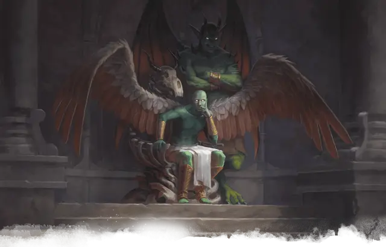

Фазриан
Fazrian
Большой Небожитель, законно-злой, именной НИП

Класс Доспеха 19 (природный доспех)
Хиты 200 (16к10 + 112)
Скорость 40 футов, летая 120 футов
| мод | спас | ||
|---|---|---|---|
| СИЛ | 24 | +7 | +7 |
| ЛОВ | 20 | +5 | +5 |
| ТЕЛ | 24 | +7 | +12 |
| мод | спас | ||
|---|---|---|---|
| ИНТ | 19 | +4 | +4 |
| МДР | 22 | +6 | +11 |
| ХАР | 25 | +7 | +12 |
Навыки Восприятие +11
Сопротивление урону излучение; дробящий, колющий, рубящий от немагических атак
Иммунитет к состояниям истощение, очарование, испуг
Чувства истинное зрение 120 футов, пассивное Восприятие 21
Языки Все, Телепатия 120 фт.
Опасность 16 (15000 опыта)
Бонус мастерства +5
Особенности
Оружие ангела. Атаки оружием Фазриана являются магическими. Если Фазриан попадает любым оружием, оно причиняет дополнительный урон излучением 5к8 (уже включено в атаку).
Божественная осведомленность. Фазриан знает, когда слышит ложь.
Врождённое колдовство. Базовой характеристикой Фазриана является Харизма (Сл спасброска от заклинания 20). Фазриан может накладывать следующие заклинания, не нуждаясь в материальных компонентах:
• Неограниченно: обнаружение зла и добра [detect evil and good], невидимость [invisibility] (только на себя);
• 3/день каждое: небесный огонь [flame strike], оживление [raise dead], рассеивание зла и добра [dispel evil and good], стена клинков [blade barrier];
• 1/день каждое: власть над погодой [control weather], нашествие насекомых [insect plague], общение [commune].
Сопротивление магии. Фазриан совершает с преимуществом спасброски от заклинаний и прочих магических эффектов.
Действия
Мультиатака. Фазриан совершает две рукопашные атаки.
Двуручный меч. Рукопашная атака оружием: +12 к попаданию, досягаемость 5 футов, одна цель. Попадание: Рубящий урон 21 (4к6 + 7) плюс урон излучением 22 (5к8).
Действия логова
Находясь на уровне Шахт Глубин и не лишенный дееспособности, Фазриан может совершить одно из следующих действий логова при значении инициативы ««20» (в случае ничьей проигрываем всем оппонентам):
• Из глаз Фазриана начинает течь кровь до значения инициативы 20 в следующем раунде. Пока не закончится этот эффект, ни одно существо в радиусе 120 футов от планетара не сможет восстанавливать свои хиты.
• Глаза Фазриана заполняются тлеющей в огне черной пустотой до значения инициативы «20» в следующем раунде. Пока не закончится этот эффект, все остальные существа в радиусе 120 футов от планетара получают помеху на спасброски.
• Глаза Фазриана вспыхивают ослепительным магическим светом до значения инициативы «20» в следующем раунде. Когда существо начинает свой ход в пределах 120 футов от планетара, и они оба могут видеть друг друга, Фазриан заставляет существо совершить спасбросок Телосложения Сл 20. В случае провала существо становится ослеплённым. Слепота длится до тех пор, пока на существо не будет наложено заклинание малое восстановление [lesser restoration] или подобная магия.
Местные эффекты
Уровень был искажен присутствием на нём Фазриана, и это создало следующие магические эффекты, заканчивающиеся после смерти планетара:
• Слабый ветерок разносит повсюду аромат роз и серы. Пытающиеся обнаружить источник ветерка персонажи, приходят в зону 23b к Фазриану, по всему пути с потолка и стен помещений струится и капает, то останавливаясь, то снова продолжая течь без видимых на то причин теплая кровь. (Кровавые потоки могут привлечь пьющих кровь хищников, таких как кровопийцы [stirge] или порождения вампиров [vampire spawn])
• Когда в подземелье вспыхивает бой, под сводами раздаётся эхо стенания нечестивых, заканчивающиеся после окончания боевых действий.
Описание
Фазриан - служивший ранее Торму, божеству мужества и самопожертвования, планетар. Он был призван в Подгорье несколько месяцев назад жрицой-авантюристкой. Испытывая отвращение от увиденных здесь гнусных созданий, Фазриан решил очистить Шахты Глубин от наводнивших уровень извращений, но питающая ужасные порождения Халастера магия исказила божественную мощь планетара. Чем больше он их уничтожал, тем больше устроенная им резня доставляла Фазриану удовольствие. Окончательным падением Фазриана стало убийство призвавшей его жрицы и её спутников. Теперь планетар выносит свои приговоры всем, кому не посчастливилось оказаться перед ним. Те, кто не готов пожертвовать собой ради более высоких целей (например, жадные искатели сокровищ, которых тянет в подземелье только с целью самообогащения), объявляются им виновными и предаются казни.
Внутри планетара ещё пылает крохотная частичка добра и если персонажи смогут заставить Фазриана осознать, что он стал тем, кого стремился уничтожить, планетар покончит с собой и своим самопожертвованием заслужит прощение Торма.